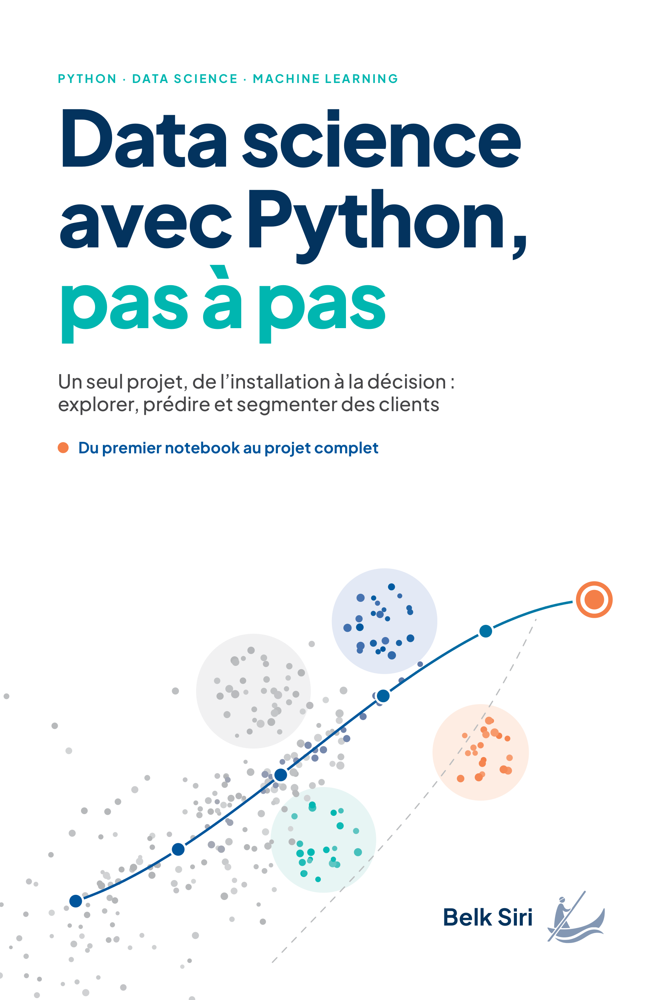

Livres de Belk Siri
Ressources gratuites pour les lecteurs : données, notebooks, exercices et guides.

Data science avec Python, pas à pas
Ressources du lecteur v1.0.1
GNU Radio
pas à pas
Volumes 1 et 2
GNU Radio pas à pas
Ressources du lecteur v1.0.0 — deux volumes